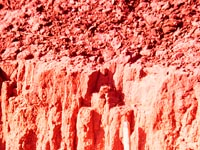

Soil Separates |
|
|
| Soil physical properties are extremely important from both an agriculture and engineering standpoint. The way in which is a soil is put together, or its architecture, is related to its structure which in turn is a reflection of texture, aggregation and porosity. The movement of air, water and solutes through the soil is dependent on the spaces and their configuration among the soil particles. This will also affect soil temperatures and the soil's ability to store water. Physical properties such as colour, texture and structure are used in soil classification, particularly in horizon definitions. All these properties will affect how easy the soil will support living organisms or how easy the soil will support a building. | |||

Soils are made up of a mixture of particles ranging from clay size of less than 2µm to gravels and stones. Smaller particles are often cemented together by organic matter, iron oxides, plant roots etc. and form the fundamental structure of soils as aggregates. The image shows a section of soil parent material under the microscope. Note the complex arrangement of particles of different sizes. If we remove the cementing material and disperse the particles in water we can separate the individual particles by sedimentation. The coarse particles settle first, the fine particles last. | |||

Bulk density is the mass of one cm 3 of the soil which includes both solid particles plus the voids among particles or the pore space. Porosity is derived mathematically from bulk density and the density of the soil solid particles or particle density. The size of soil particles and how they are clumped together or aggregated largely determines the bulk density and porosity. Solonetzic soils (see image) have severe structural problems due to high sodium salts in their parent material. The B horizons of these soils have a high density and little porosity characterized by the round top structure that is almost impossible for plant roots to penetrate. Operations such as clear cutting forests, heavy field equipment and erosion can lead to increases in bulk density and subsequent reduction in porosity. How will this affect plant growth and soil structure?
| |||
 The term structure refers to grouping of the primary soil particles into secondary clumps or aggregates-often called peds. Structure is important to components that flow such as water, air, heat, nutrients. The prismatic structure seen in the brown soil to the left is typical of prairie soils. The vertical cracks allow for rapid downward water movement and root growth. Chemical conditions such as salinity can severely affect structure. How can a farmer change the soil structure for better or worse?
| |||

Soil texture is a reflection of the distribution of particle size fractions in soils or the relative amounts of sand silt and clay. Fine textured soils contain more clay size minerals and have relatively high porosity but the pores are small and often discontinuous. In contrast, coarse textured soils contain sand sized minerals and have more porosity but bigger pores that are connected. Why can a soil with a fine texture store water efficiently than a soil with a coarse texture? | |||

In Saskatchewan, the colour of soil surface horizons is related to how much organic matter is present. In sub surface horizons mineral composition becomes important. Accumulations of oxidized iron compounds give red colours, loss of organic matter and iron compounds gives light coloured grey horizons. Red and brown mottled horizons are indicative of reduced conditions or water logged soils. Can we measure colour scientifically? | |||
Soil water holding characteristics are important for dry land farming, selection of the correct irrigation system, irrigation scheduling, crop selection, and ground water quality. How do you know how much water you need to grow a crop? How do soil physical properties affect the soil's ability to hold water. |